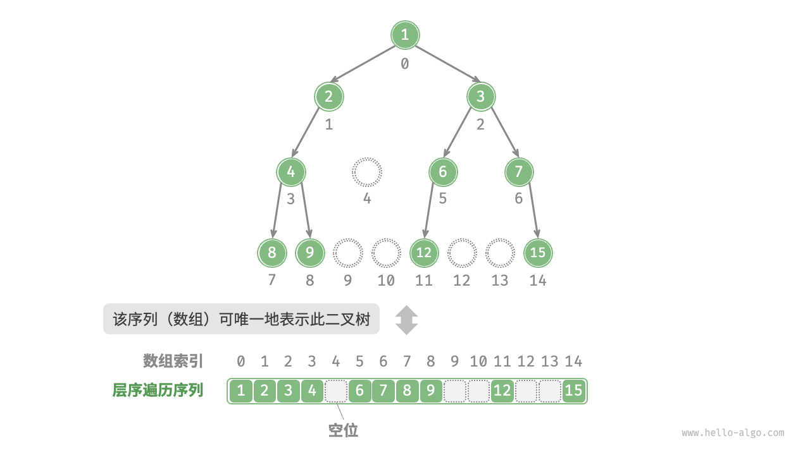

二叉树数组表示
在链表表示下，二叉树的存储单元为节点 TreeNode ，节点之间通过指针相连接。上一节介绍了链表表示下的二叉树的各项基本操作。
那么，我们能否用数组来表示二叉树呢？答案是肯定的。
表示完美二叉树
先分析一个简单案例。给定一棵完美二叉树，我们将所有节点按照层序遍历的顺序存储在一个数组中，则每个节点都对应唯一的数组索引。
根据层序遍历的特性，我们可以推导出父节点索引与子节点索引之间的“映射公式”：若某节点的索引为 $i$ ，则该节点的左子节点索引为 $2i + 1$ ，右子节点索引为 $2i + 2$ 。下图展示了各个节点索引之间的映射关系。

映射公式的角色相当于链表中的指针。给定数组中的任意一个节点，我们都可以通过映射公式来访问它的左（右）子节点。
表示任意二叉树
完美二叉树是一个特例，在二叉树的中间层通常存在许多 None 。由于层序遍历序列并不包含这些 None ，因此我们无法仅凭该序列来推测 None 的数量和分布位置。这意味着存在多种二叉树结构都符合该层序遍历序列。
如下图所示，给定一棵非完美二叉树，上述数组表示方法已经失效。

为了解决此问题，我们可以考虑在层序遍历序列中显式地写出所有 None 。如下图所示，这样处理后，层序遍历序列就可以唯一表示二叉树了。示例代码如下：
"Python"
python title="" // 二叉树的数组表示 // 使用 None 来表示空位 tree = [1, 2, 3, 4, None, 6, 7, 8, 9, None, None, 12, None, None, 15]"C++"
cpp title="" /* 二叉树的数组表示 */ // 使用 int 最大值 INT_MAX 标记空位 vector<int> tree = {1, 2, 3, 4, INT_MAX, 6, 7, 8, 9, INT_MAX, INT_MAX, 12, INT_MAX, INT_MAX, 15};"Java"
java title="" /* 二叉树的数组表示 */ // 使用 int 的包装类 Integer ，就可以使用 null 来标记空位 Integer[] tree = { 1, 2, 3, 4, null, 6, 7, 8, 9, null, null, 12, null, null, 15 };"C#"
csharp title="" /* 二叉树的数组表示 */ // 使用 int? 可空类型 ，就可以使用 null 来标记空位 int?[] tree = [1, 2, 3, 4, null, 6, 7, 8, 9, null, null, 12, null, null, 15];"Go"
go title="" /* 二叉树的数组表示 */ // 使用 any 类型的切片, 就可以使用 nil 来标记空位 tree := []any{1, 2, 3, 4, nil, 6, 7, 8, 9, nil, nil, 12, nil, nil, 15}"Swift"
swift title="" /* 二叉树的数组表示 */ // 使用 Int? 可空类型 ，就可以使用 nil 来标记空位 let tree: [Int?] = [1, 2, 3, 4, nil, 6, 7, 8, 9, nil, nil, 12, nil, nil, 15]"JS"
javascript title="" /* 二叉树的数组表示 */ // 使用 null 来表示空位 let tree = [1, 2, 3, 4, null, 6, 7, 8, 9, null, null, 12, null, null, 15];"TS"
typescript title="" /* 二叉树的数组表示 */ // 使用 null 来表示空位 let tree: (number | null)[] = [1, 2, 3, 4, null, 6, 7, 8, 9, null, null, 12, null, null, 15];"Dart"
dart title="" /* 二叉树的数组表示 */ // 使用 int? 可空类型 ，就可以使用 null 来标记空位 List<int?> tree = [1, 2, 3, 4, null, 6, 7, 8, 9, null, null, 12, null, null, 15];"Rust"
rust title="" /* 二叉树的数组表示 */ // 使用 None 来标记空位 let tree = [Some(1), Some(2), Some(3), Some(4), None, Some(6), Some(7), Some(8), Some(9), None, None, Some(12), None, None, Some(15)];"C"
c title="" /* 二叉树的数组表示 */ // 使用 int 最大值标记空位，因此要求节点值不能为 INT_MAX int tree[] = {1, 2, 3, 4, INT_MAX, 6, 7, 8, 9, INT_MAX, INT_MAX, 12, INT_MAX, INT_MAX, 15};"Zig"
```zig title=""
```

值得说明的是，完全二叉树非常适合使用数组来表示。回顾完全二叉树的定义，None 只出现在最底层且靠右的位置，因此所有 None 一定出现在层序遍历序列的末尾。
这意味着使用数组表示完全二叉树时，可以省略存储所有 None ，非常方便。下图给出了一个例子。

以下代码实现了一棵基于数组表示的二叉树，包括以下几种操作。
- 给定某节点，获取它的值、左（右）子节点、父节点。
获取前序遍历、中序遍历、后序遍历、层序遍历序列。
"Python"
class ArrayBinaryTree: """数组表示下的二叉树类""" def __init__(self, arr: list[int | None]): """构造方法""" self._tree = list(arr) def size(self): """列表容量""" return len(self._tree) def val(self, i: int) -> int: """获取索引为 i 节点的值""" // 若索引越界，则返回 None ，代表空位 if i < 0 or i >= self.size(): return None return self._tree[i] def left(self, i: int) -> int | None: """获取索引为 i 节点的左子节点的索引""" return 2 * i + 1 def right(self, i: int) -> int | None: """获取索引为 i 节点的右子节点的索引""" return 2 * i + 2 def parent(self, i: int) -> int | None: """获取索引为 i 节点的父节点的索引""" return (i - 1) // 2 def level_order(self) -> list[int]: """层序遍历""" self.res = [] // 直接遍历数组 for i in range(self.size()): if self.val(i) is not None: self.res.append(self.val(i)) return self.res def dfs(self, i: int, order: str): """深度优先遍历""" if self.val(i) is None: return // 前序遍历 if order == "pre": self.res.append(self.val(i)) self.dfs(self.left(i), order) // 中序遍历 if order == "in": self.res.append(self.val(i)) self.dfs(self.right(i), order) // 后序遍历 if order == "post": self.res.append(self.val(i)) def pre_order(self) -> list[int]: """前序遍历""" self.res = [] self.dfs(0, order="pre") return self.res def in_order(self) -> list[int]: """中序遍历""" self.res = [] self.dfs(0, order="in") return self.res def post_order(self) -> list[int]: """后序遍历""" self.res = [] self.dfs(0, order="post") return self.res"C++"
/* 数组表示下的二叉树类 */ class ArrayBinaryTree { public: /* 构造方法 */ ArrayBinaryTree(vector<int> arr) { tree = arr; } /* 列表容量 */ int size() { return tree.size(); } /* 获取索引为 i 节点的值 */ int val(int i) { // 若索引越界，则返回 INT_MAX ，代表空位 if (i < 0 || i >= size()) return INT_MAX; return tree[i]; } /* 获取索引为 i 节点的左子节点的索引 */ int left(int i) { return 2 * i + 1; } /* 获取索引为 i 节点的右子节点的索引 */ int right(int i) { return 2 * i + 2; } /* 获取索引为 i 节点的父节点的索引 */ int parent(int i) { return (i - 1) / 2; } /* 层序遍历 */ vector<int> levelOrder() { vector<int> res; // 直接遍历数组 for (int i = 0; i < size(); i++) { if (val(i) != INT_MAX) res.push_back(val(i)); } return res; } /* 前序遍历 */ vector<int> preOrder() { vector<int> res; dfs(0, "pre", res); return res; } /* 中序遍历 */ vector<int> inOrder() { vector<int> res; dfs(0, "in", res); return res; } /* 后序遍历 */ vector<int> postOrder() { vector<int> res; dfs(0, "post", res); return res; } private: vector<int> tree; /* 深度优先遍历 */ void dfs(int i, string order, vector<int> &res) { // 若为空位，则返回 if (val(i) == INT_MAX) return; // 前序遍历 if (order == "pre") res.push_back(val(i)); dfs(left(i), order, res); // 中序遍历 if (order == "in") res.push_back(val(i)); dfs(right(i), order, res); // 后序遍历 if (order == "post") res.push_back(val(i)); } };"Java"
/* 数组表示下的二叉树类 */ class ArrayBinaryTree { private List<Integer> tree; /* 构造方法 */ public ArrayBinaryTree(List<Integer> arr) { tree = new ArrayList<>(arr); } /* 列表容量 */ public int size() { return tree.size(); } /* 获取索引为 i 节点的值 */ public Integer val(int i) { // 若索引越界，则返回 null ，代表空位 if (i < 0 || i >= size()) return null; return tree.get(i); } /* 获取索引为 i 节点的左子节点的索引 */ public Integer left(int i) { return 2 * i + 1; } /* 获取索引为 i 节点的右子节点的索引 */ public Integer right(int i) { return 2 * i + 2; } /* 获取索引为 i 节点的父节点的索引 */ public Integer parent(int i) { return (i - 1) / 2; } /* 层序遍历 */ public List<Integer> levelOrder() { List<Integer> res = new ArrayList<>(); // 直接遍历数组 for (int i = 0; i < size(); i++) { if (val(i) != null) res.add(val(i)); } return res; } /* 深度优先遍历 */ private void dfs(Integer i, String order, List<Integer> res) { // 若为空位，则返回 if (val(i) == null) return; // 前序遍历 if ("pre".equals(order)) res.add(val(i)); dfs(left(i), order, res); // 中序遍历 if ("in".equals(order)) res.add(val(i)); dfs(right(i), order, res); // 后序遍历 if ("post".equals(order)) res.add(val(i)); } /* 前序遍历 */ public List<Integer> preOrder() { List<Integer> res = new ArrayList<>(); dfs(0, "pre", res); return res; } /* 中序遍历 */ public List<Integer> inOrder() { List<Integer> res = new ArrayList<>(); dfs(0, "in", res); return res; } /* 后序遍历 */ public List<Integer> postOrder() { List<Integer> res = new ArrayList<>(); dfs(0, "post", res); return res; } }
优点与局限性
二叉树的数组表示主要有以下优点。
- 数组存储在连续的内存空间中，对缓存友好，访问与遍历速度较快。
- 不需要存储指针，比较节省空间。
- 允许随机访问节点。
然而，数组表示也存在一些局限性。
- 数组存储需要连续内存空间，因此不适合存储数据量过大的树。
- 增删节点需要通过数组插入与删除操作实现，效率较低。
- 当二叉树中存在大量
None时，数组中包含的节点数据比重较低，空间利用率较低。